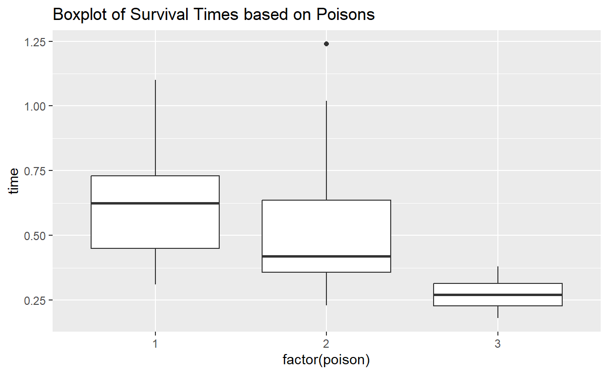

ANOVA
As with t-tests, R is very useful for running ANOVA with large
datasets. Computing values such as sum of squares and finding the
F-value can be quite cumbersome, but the aov function in R
makes all of that easy to do. It takes a bit more work to interpret and
get other values such as \(\eta^2\),
but all of that can be done in R still.
In this tutorial, we will use the poisons dataset from
package boot. The dataset contains 48 rows and 3 columns.
The data form a 3x4 factorial experiment, the factors being three
poisons and four treatments. Each combination of the two factors was
used for four animals, the allocation to animals having been completely
randomized. The details about the dataset can be found here.
As a starter, here is what the structure of the poisons
data looks like.
data("poisons")
head(poisons)Our goal here is to examine the relationship between
time of survival of the guniea pigs with two categorical
variables poison i.e. type of poison used to the animals
and treat i.e. type of treatment given to them.
ANOVA in R
Suppose we are interested in seeing if there is a relationship between the type of poison given to the guinea pigs (1, 2, 3) and their survival times. Since the type of poison has more than two levels, it wouldn’t be appropriate to use a t-test in this case. Using ANOVA would allow us to see if there were any differences across the different types of poison.So, our objective is to test the following assumption:
- \(H_0\): There is no difference in survival time average between group based on the type of poison used.
against,
- \(H_1\): The survival time average is different for at least one of the poison group.
Just to get an idea of what the relationships look like before we run the ANOVA, let’s take a look at some side-by-side boxplots.
qplot(x = factor(poison), y = time, main = "Boxplot of Survival Times based on Poisons", data = poisons, geom = 'boxplot')
Now, let’s investigate this relationship with the help of ANOVA.
Using aov
You can use the aov function to run ANOVA in R. The
first argument uses the formula notation, with the “outcome” variable
going on the lefthand side of a tilde (~) and the
“predictor” going on the righthand side. Recall that we had to use the
factor function in order to make sure R knows to treat a
variable as categorical. The second argument is used to specify the data
frame that we are pulling the data from. Here, we are going to be using
the poisons data frame, and using the time and
poison columns.
The aov function outputs an aov object,
which represents the ANOVA being run with the data. In order to see the
result of the analysis, we need to use summary on this
aov object.
poison_anova <- aov(time ~ factor(poison), data=poisons)
summary(poison_anova)## Df Sum Sq Mean Sq F value Pr(>F)
## factor(poison) 2 1.033 0.5165 11.79 7.66e-05 ***
## Residuals 45 1.972 0.0438
## ---
## Signif. codes: 0 '***' 0.001 '**' 0.01 '*' 0.05 '.' 0.1 ' ' 1Note that this is the same sort of syntax used for running a linear
model using lm, which is discussed in the
regression tutorial.
ANOVA output
The output from the summary function gives a lot of
information about the ANOVA that was run. It essentially gives you
everything you need to run the test, such as degrees of freedom and sum
of squares. It also gives you the final F statistic under
F value and the p-value under Pr(>F). The
asterisks next to the p-value correspond to different alpha levels,
which you can interpret using the last line of output. That is, if there
are three stars next to the p-value, then it means the p-value is
between 0 and 0.001. This helps you see quickly whether the result is
significant or not.For example, if you prefer your level of significance
to be 5%, then the factor is significant if the corresponding p-value is
less than 0.05.
Pairwise Comparison
Note that, the ANOVA test does not inform us which group has a different mean. To identify the group(s), we can perform a test called Tukey’s Pairwise Comparison. This test uses pairwise post-hoc testing to determine whether there is a difference between the mean of all possible pairs using a studentized range distribution. This method tests every possible pair of all groups. Those who are interested, can check out this link for detailed description!
But, good news is, we don’t need to worry about performing the
calculations by our own in case the pairwise comparison comes up. R will
do it for us using TukeyHSD() function.
TukeyHSD(poison_anova)## Tukey multiple comparisons of means
## 95% family-wise confidence level
##
## Fit: aov(formula = time ~ factor(poison), data = poisons)
##
## $`factor(poison)`
## diff lwr upr p adj
## 2-1 -0.073125 -0.2525046 0.10625464 0.5881654
## 3-1 -0.341250 -0.5206296 -0.16187036 0.0000971
## 3-2 -0.268125 -0.4475046 -0.08874536 0.0020924From the output table you can see, we have got quite a few things!
The columns diff,lwr,upr and
p adj show the difference in means for different groups,
the lower and upper boundaries for those differences and the adjusted
p-values for the differences due to the presence of multiple groups,
respectively.
How to interpret the results?
The interpretation for TukeyHSD test can be done looking
at the p-values of the different combinations of the levels of the
factor of interest. Here it is the poison. Let’s try to
interpret the significance at a 5% level. As you can see, the adjusted
p-value for the difference in 2-1 (i.e. difference of
poison type 1 and 2)(p adj = 0.588) is way higher than
0.05, which leads us to the conclusion that these two types of poisons
have no different effect on the survival times of the animals. A similar
observation of adjusted p-values can tell you that the poison type 1 and
3, and poison type 2 and 3, however are significantly different in their
effects on survival times.
Now, observe the intervals ([lwr - upr]) given by
TukeyHSD test for each of those differences. For the
2-1 case, we got an interval that contains 0, where as for
the other two differences (3-1 and 3-2), we
don’t have 0 contained in the intervals. This is another indication of
examining the significance of the differences, i.e. if the confidence
interval for a particular estimate of any variable (here, difference in
poison types) contains 0 in it, that variable might be an insignificant
one to explain the variation in the outcome (here, survival time).
Finding Effect Size (\(\eta_2\))
The output doesn’t explicitly give you \(\eta^2\) values, but you can actually compute it quite easily based on the provided output. Recall that the eta squared is found using
\[\eta^2 = \frac{SS_{effect}}{SS_{total}}\] So, we can find this using some simple arithmetic.
1.033/(1.033+1.972)## [1] 0.3437604So, the \(\eta^2\) suggests that the type of poison has a large effect on the survival times of the Guinea pigs.
Factorial ANOVA
Factorial analysis of variance (ANOVA) is a statistical procedure that allows researchers to explore the influence of two or more independent variables (factors) on a single dependent variable.
Suppose, we are now interested to know if there is any statistical difference between the survival times of the guinea pigs based on both the type of poison they had and the type of treatment they got.
To do factorial ANOVA, we use the aov() function with a
formula to define the variables as we did before, except this time, we
simply add additional variables. Here, we will include both
poison and treat. We use a + to
include the variables here, which assumes that the variables are
independent. Just like with using lm to run linear models,
you can use a * to include an interaction term as well.
poison_anova2 <- aov(time ~ factor(poison) + factor(treat), data=poisons)
summary(poison_anova2)## Df Sum Sq Mean Sq F value Pr(>F)
## factor(poison) 2 1.0330 0.5165 20.64 5.7e-07 ***
## factor(treat) 3 0.9212 0.3071 12.27 6.7e-06 ***
## Residuals 42 1.0509 0.0250
## ---
## Signif. codes: 0 '***' 0.001 '**' 0.01 '*' 0.05 '.' 0.1 ' ' 1The output should look similar to a one-way ANOVA, except with additional variables.
Exercises
For exercises, let’s consider a data set called
warpbreaks in datasets package that consists
of the number of warp breaks per loom, where a loom corresponds to a
fixed length of yarn. For more details, visit the following link: Warpbreaks.
Let’s load the dataset and take a look at it.
data("warpbreaks")
head(warpbreaks)Exercise 1
How would you run an ANOVA to determine whether there is a
relationship between the number of breaks i.e. breaks and
the type of wool used? Run the model and output the
summary.
Exercise 2
What is the \(\eta^2\) value for
wool in the ANOVA you ran in Exercise 1?
Exercise 3
Note that wool has two categories. What if you had
decided to simply run a two-sided independent samples t-test for the
difference in mean length of breaks between type A and type
B wool? Complete the code and run the t-test below, which includes an
argument var.equal = TRUE to include an equal variances
assumptions (recall that ANOVA has an equal variances assumption).
# Uncomment the below code by removing the "#" and complete it.
# t.test( breaks~wool , data = warpbreaks, var.equal = TRUE)Exercise 4
How would you run an ANOVA to determine whether there is a difference
between the length of breaks based on both the typw of
wool used and the level of tension applied ?
Run the model considering the interaction of the two independent
variables and output the summary.
Exercise 5
Submitting work
Generate your submission code by putting in your UID in the function below. For example, if your UID is2, then your code should
look like submission_code(UID = 2)
# Replace the number below with your UID
submission_code(2)